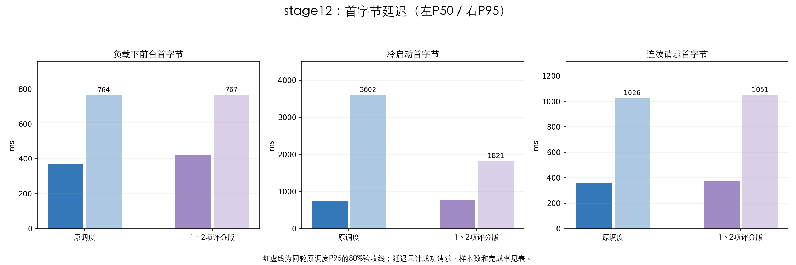
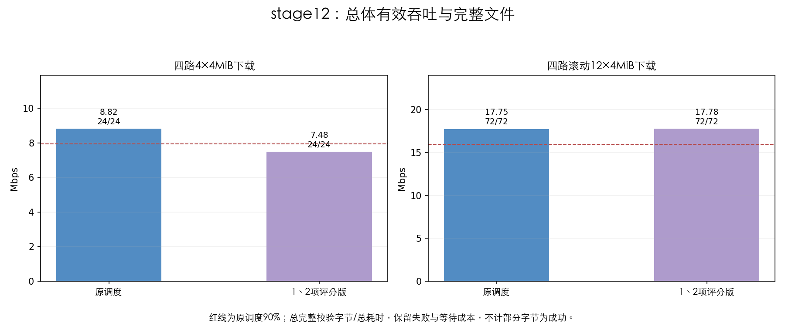
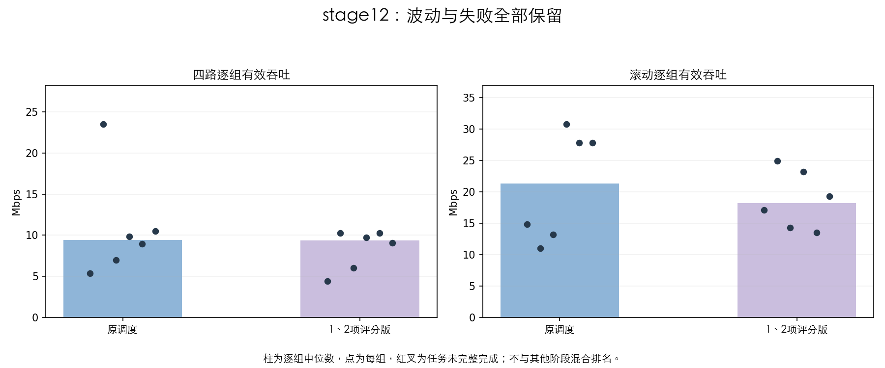
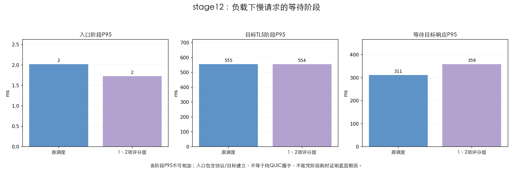
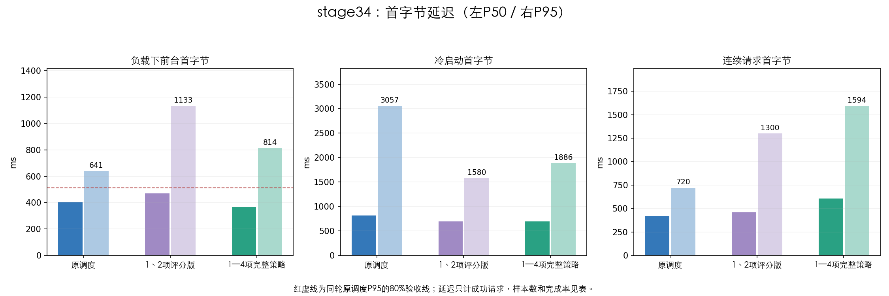
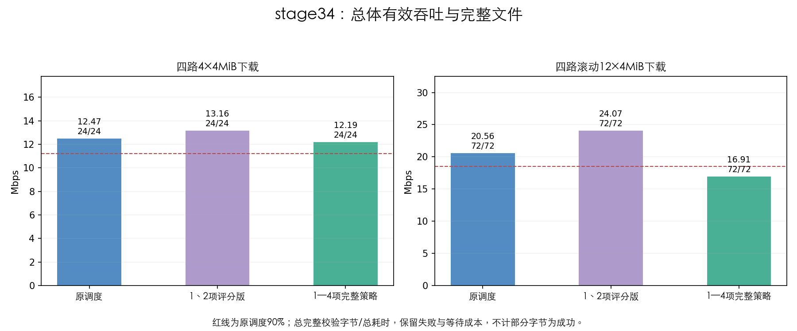
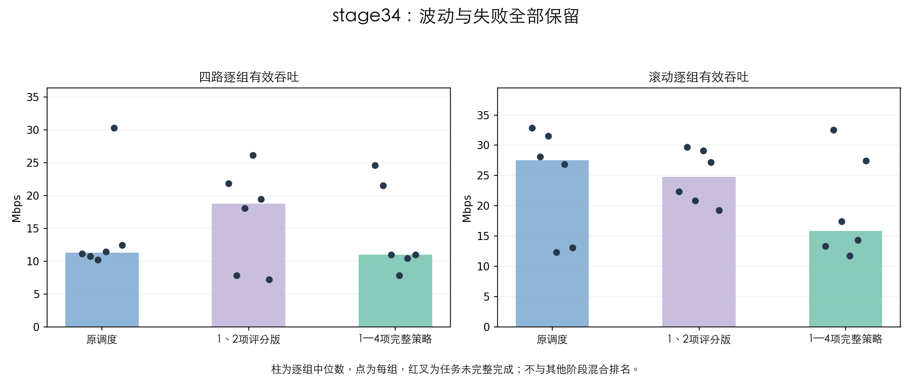
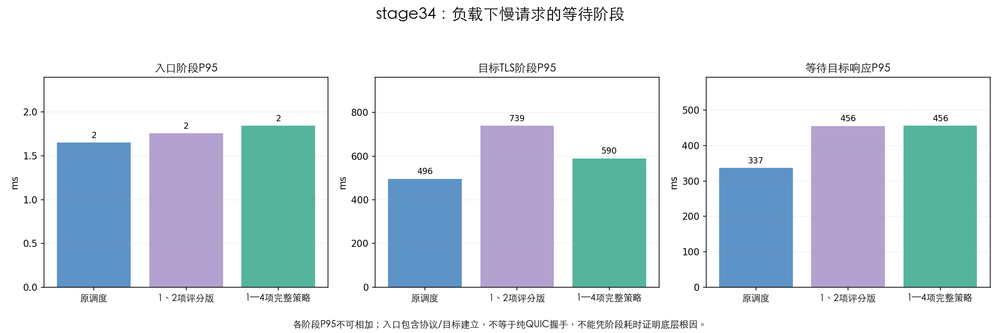

Android TFY-AN00 · 同一 Wi-Fi / 香港 VPS · 原型核心 · 未修改加密、BBR或线格式。
轻量记录可用于后续排查；两种新调度保持默认关闭，继续使用原调度。第一阶段第1、2项带载P95为767ms，对照764ms，四路有效吞吐7.48Mbps，对照8.82Mbps；未达标后继续实现第3、4项，并开启第二阶段三组同期对照。没有用第一阶段数值作第二阶段的基线。
第二阶段每种策略6组混合、6组四路、6组滚动和3组短请求。带载P95：原调度641ms、评分版1133ms、完整策略814ms；完整策略的带载P50虽从403降到367ms，尾延迟没有改善。四路有效吞吐12.47/13.16/12.19Mbps，滚动20.56/24.07/16.91Mbps。完整策略滚动只保留82.3%的原调度吞吐，低于90%门槛。各组前台请求和后台/下载文件全部完成，没有用失败或慢组筛选出优势。
本轮共105例、4245条主合并记录，原始辅助日志另存。race与vet通过，原始JSON行完整且编译哈希一致。冷启动、连续与并发的完整数据也保留；例如候选冷启动有改善，但连续请求尾部回退，不能以单项提升宣布验收成功。
第一阶段一个原调度慢请求入口仅0.72ms，目标TLS约1259.77ms，响应约363.82ms。选择时另一通道RTT约125ms，选中通道约260ms；这说明该次等待主要不在入口建立，且原评分会接纳到RTT更高的通道，但并不能独自证明因果。新策略已经在真机将两条后台流聚到一个通道，并让多数后续请求使用另一条；后续目标TLS/响应仍有慢样本，说明纯粹分开连接不足以达到本轮目标。
first_read_wait是第一次应用Write到第一次成功Read的等待，不等于完整目标TLS握手；pending_write_bytes是正在执行的应用Write长度，不是QUIC内部队列长度。目标握手、共享链路竞争和传输恢复的相互影响仍未确定，不能把所有尾延迟归为调度排队。下一步若再研究，应先针对这些阶段收集证据，而非直接发布当前候选。
每种策略至少6组混合负载、48条发起时后台仍活跃的请求；前台请求全部成功，负载首字节P95≤同轮原调度的80%；后台文件完成数不低于对照；四路与滚动下载各6组，完成数不低于对照且总体有效吞吐≥对照90%。全部条件同时满足才通过。条件为本轮工程门槛，不是统计显著性证明。
| 策略 | 混合组数 | 全部前台成功 | 真正带载样本 | 带载P50ms | 带载P95ms | 后台完整文件 |
|---|---|---|---|---|---|---|
| 原调度 | 6 | 72/72 | 72 | 372.181 | 764.209 | 12/12 |
| 第1、2项：评分版 | 6 | 72/72 | 72 | 422.854 | 766.611 | 12/12 |
| 策略 | 负载 | 组数 | 完整文件 | 逐组中位Mbps | 总体有效Mbps |
|---|---|---|---|---|---|
| 原调度 | 四路4×4MiB | 6 | 24/24 | 9.41 | 8.82 |
| 原调度 | 四路滚动12×4MiB | 6 | 72/72 | 21.32 | 17.75 |
| 第1、2项：评分版 | 四路4×4MiB | 6 | 24/24 | 9.39 | 7.48 |
| 第1、2项：评分版 | 四路滚动12×4MiB | 6 | 72/72 | 18.21 | 17.78 |
| 策略 | 门槛 | 结果 |
|---|---|---|
| 第1、2项：评分版 | enough_samples | 通过 |
| 第1、2项：评分版 | loaded_p95 | 未通过 |
| 第1、2项：评分版 | foreground_completion | 通过 |
| 第1、2项：评分版 | background_completion | 通过 |
| 第1、2项：评分版 | parallel_complete | 通过 |
| 第1、2项：评分版 | parallel_throughput | 未通过 |
| 第1、2项：评分版 | rolling_complete | 通过 |
| 第1、2项：评分版 | rolling_throughput | 通过 |




| 策略 | 场景 | 成功 | P50ms | P95ms |
|---|---|---|---|---|
| 原调度 | cold | 36/36 | 750.706 | 3601.593 |
| 原调度 | warm | 36/36 | 361.652 | 1026.042 |
| 原调度 | batch | 36/36 | 368.78 | 904.494 |
| 第1、2项：评分版 | cold | 36/36 | 784.056 | 1821.331 |
| 第1、2项：评分版 | warm | 36/36 | 373.39 | 1050.615 |
| 第1、2项：评分版 | batch | 36/36 | 375.549 | 702.526 |
| 策略 | 来源 | 请求 | 入口ms | 目标TLSms | 响应ms | 总首字节ms | 通道 | RTTμs | 活跃 | 待首包 | 大流 |
|---|---|---|---|---|---|---|---|---|---|---|---|
| 原调度 | mixed-b2-p2-next-opt.jsonl | 10 | 0.72 | 1259.77 | 363.82 | 1624.34 | 1 | 260416 | 1 | 0 | 1 |
| 原调度 | mixed-b2-p2-next-opt.jsonl | 9 | 0.7 | 633.72 | 545.53 | 1180.2 | 1 | 133903 | 1 | 0 | 1 |
| 原调度 | mixed-b4-p2-next-opt.jsonl | 2 | 1.17 | 608.47 | 239.57 | 849.34 | 0 | 121874 | 1 | 0 | 0 |
| 第1、2项：评分版 | mixed-b5-p2-next-latency.jsonl | 12 | 0.53 | 656.31 | 328.28 | 985.14 | 0 | 141812 | 1 | 0 | 1 |
| 第1、2项：评分版 | mixed-b3-p2-next-latency.jsonl | 4 | 2.28 | 364.32 | 547.09 | 913.71 | 0 | 118345 | 1 | 0 | 1 |
| 第1、2项：评分版 | mixed-b4-p1-next-latency.jsonl | 3 | 1.02 | 565.73 | 282.27 | 849.05 | 0 | 118125 | 1 | 0 | 0 |
验收汇总JSON · 完整CSV · 原始合并JSON · 计划与哈希
| 策略 | 混合组数 | 全部前台成功 | 真正带载样本 | 带载P50ms | 带载P95ms | 后台完整文件 |
|---|---|---|---|---|---|---|
| 原调度 | 6 | 72/72 | 72 | 402.87 | 640.569 | 12/12 |
| 第1、2项：评分版 | 6 | 72/72 | 72 | 468.717 | 1133.263 | 12/12 |
| 第1—4项：保留通道＋滞后 | 6 | 72/72 | 66 | 367.058 | 813.931 | 12/12 |
| 策略 | 负载 | 组数 | 完整文件 | 逐组中位Mbps | 总体有效Mbps |
|---|---|---|---|---|---|
| 原调度 | 四路4×4MiB | 6 | 24/24 | 11.30 | 12.47 |
| 原调度 | 四路滚动12×4MiB | 6 | 72/72 | 27.50 | 20.56 |
| 第1、2项：评分版 | 四路4×4MiB | 6 | 24/24 | 18.78 | 13.16 |
| 第1、2项：评分版 | 四路滚动12×4MiB | 6 | 72/72 | 24.79 | 24.07 |
| 第1—4项：保留通道＋滞后 | 四路4×4MiB | 6 | 24/24 | 11.00 | 12.19 |
| 第1—4项：保留通道＋滞后 | 四路滚动12×4MiB | 6 | 72/72 | 15.87 | 16.91 |
| 策略 | 门槛 | 结果 |
|---|---|---|
| 第1、2项：评分版 | enough_samples | 通过 |
| 第1、2项：评分版 | loaded_p95 | 未通过 |
| 第1、2项：评分版 | foreground_completion | 通过 |
| 第1、2项：评分版 | background_completion | 通过 |
| 第1、2项：评分版 | parallel_complete | 通过 |
| 第1、2项：评分版 | parallel_throughput | 通过 |
| 第1、2项：评分版 | rolling_complete | 通过 |
| 第1、2项：评分版 | rolling_throughput | 通过 |
| 第1—4项：保留通道＋滞后 | enough_samples | 通过 |
| 第1—4项：保留通道＋滞后 | loaded_p95 | 未通过 |
| 第1—4项：保留通道＋滞后 | foreground_completion | 通过 |
| 第1—4项：保留通道＋滞后 | background_completion | 通过 |
| 第1—4项：保留通道＋滞后 | parallel_complete | 通过 |
| 第1—4项：保留通道＋滞后 | parallel_throughput | 通过 |
| 第1—4项：保留通道＋滞后 | rolling_complete | 通过 |
| 第1—4项：保留通道＋滞后 | rolling_throughput | 未通过 |




| 策略 | 场景 | 成功 | P50ms | P95ms |
|---|---|---|---|---|
| 原调度 | cold | 36/36 | 812.369 | 3057.246 |
| 原调度 | warm | 36/36 | 416.844 | 720.449 |
| 原调度 | batch | 36/36 | 310.124 | 679.327 |
| 第1、2项：评分版 | cold | 36/36 | 691.547 | 1580.179 |
| 第1、2项：评分版 | warm | 36/36 | 458.544 | 1300.26 |
| 第1、2项：评分版 | batch | 36/36 | 399.569 | 1071.248 |
| 第1—4项：保留通道＋滞后 | cold | 36/36 | 696.607 | 1886.073 |
| 第1—4项：保留通道＋滞后 | warm | 36/36 | 605.775 | 1593.812 |
| 第1—4项：保留通道＋滞后 | batch | 36/36 | 419.564 | 1182.78 |
| 策略 | 来源 | 请求 | 入口ms | 目标TLSms | 响应ms | 总首字节ms | 通道 | RTTμs | 活跃 | 待首包 | 大流 |
|---|---|---|---|---|---|---|---|---|---|---|---|
| 原调度 | mixed-b1-p1-next-opt.jsonl | 7 | 0.63 | 255.65 | 575.36 | 831.66 | 1 | 112594 | 1 | 0 | 1 |
| 原调度 | mixed-b3-p2-next-opt.jsonl | 11 | 0.48 | 621.16 | 133.63 | 755.29 | 1 | 132846 | 1 | 0 | 1 |
| 原调度 | mixed-b6-p3-next-opt.jsonl | 4 | 0.94 | 611.09 | 98.45 | 710.52 | 1 | 114371 | 0 | 0 | 0 |
| 第1、2项：评分版 | mixed-b4-p1-next-latency.jsonl | 6 | 0.8 | 1088.14 | 448.49 | 1537.49 | 1 | 112195 | 0 | 0 | 0 |
| 第1、2项：评分版 | mixed-b4-p1-next-latency.jsonl | 8 | 0.72 | 1053.88 | 377.1 | 1431.73 | 1 | 128137 | 0 | 0 | 0 |
| 第1、2项：评分版 | mixed-b4-p1-next-latency.jsonl | 7 | 1.25 | 267.34 | 1062.29 | 1330.99 | 1 | 114622 | 0 | 0 | 0 |
| 第1—4项：保留通道＋滞后 | mixed-b5-p1-next-reserve.jsonl | 2 | 3.52 | 336.04 | 4179.46 | 4519.09 | 0 | 121306 | 0 | 0 | 0 |
| 第1—4项：保留通道＋滞后 | mixed-b5-p1-next-reserve.jsonl | 3 | 0.72 | 661.05 | 456.14 | 1117.94 | 0 | 120558 | 0 | 0 | 0 |
| 第1—4项：保留通道＋滞后 | mixed-b2-p2-next-reserve.jsonl | 6 | 0.76 | 447.25 | 504.85 | 952.89 | 0 | 114596 | 0 | 0 | 0 |
验收汇总JSON · 完整CSV · 原始合并JSON · 计划与哈希
两条16MiB后台下载与每组12个前台HEAD请求共享同一客户端。仅统计发起时后台仍活跃的请求作为带载延迟，其余前台请求仍计成功率；两组带载样本数可能不同。P95为成功请求nearest-rank，不把失败记为0。各阶段中位数不可直接相加。入口含目标建立，不等于纯QUIC握手。
四路预算90秒、滚动150秒。有效吞吐只计完整校验的文件，分母包含握手和超时等待；部分字节不冒充成功。每例前重启测试隧道、等待5秒，目标服务持续运行，开始前确认默认网络为Wi-Fi。第一阶段双组交替先后；第二阶段六种排列，每种占每个位置两次。延迟复核每种3组，位置均衡但非全排列。
两阶段测试时段、记录字段与二进制不同，不能合并吞吐或直接用第一阶段基线判第二阶段通过。只在各阶段同期比较；阶段间关系只说明实现递进。原调度在记录里显示的score_us是新评分的影子观察值，并非原调度实际采用的旧公式。合并JSON/CSV来自主测量JSONL；短请求的辅助事件仍保留在同名.log中。request编号只在一个客户端内唯一，应结合来源文件、客户端生命周期和记录本身解释，不跨文件强行关联。
单个慢请求的阶段和状态可以定位等待发生处，不能独自证明拥塞、丢包或运营商策略是根因。没有测试识别率、锁屏耗电、多网络长期运行；实验开关保持可回退，不代表正式App已发布。
手机VPN已恢复，保持亮屏设置回到0；临时服务和私有测试配置清理完成，生产入口保持运行。未安装新正式App，未修改默认策略。验证记录 · 本轮源码差异。源码快照依赖FastCatAPP core工作区，不是独立完整仓库；包内不含部署凭证。